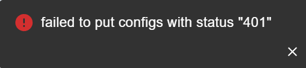
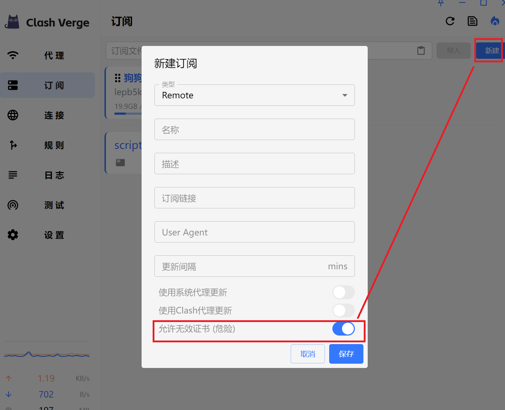
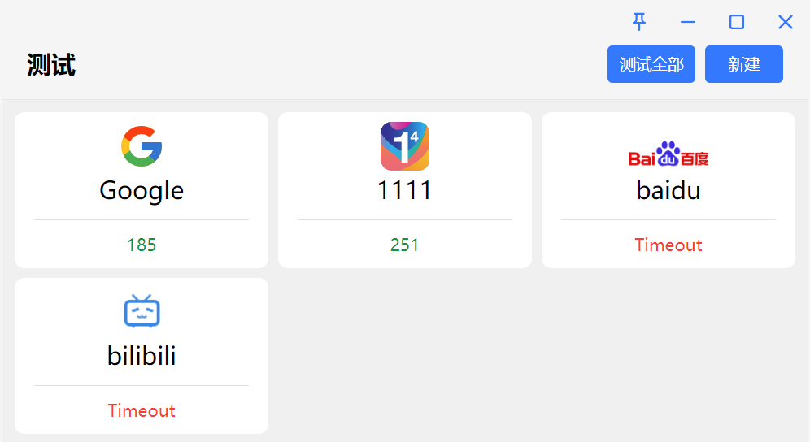

其他问题
找不到系统文件 os error¶
问题原因:
- 内核或配置文件损坏，没找到内核。
- 内核文件被杀毒软件删除或添加到了隔离列表。
解决方案:
- 左侧菜单“设置”，右下方找到“配置目录”，删除里面所有文件，重启软件；如果还是不行，则卸载老版本，重新安装。
- 如果被杀毒软件误伤，请将文件手动恢复并添加到白名单。
- 删除所有数据(Win)
rm ~\AppData\Roaming\io.github.clash-verge-rev.clash-verge-rev -r -fo
代理后有部分网站无法访问¶
问题原因：
- 可能是其它程序占用代理端口，默认代理端口是7897。
- 用过不正经的加速器(包括但不限于游戏加速器)，篡改系统
hosts。
解决方案：
- 检查系统
hosts，删除不正常的条目。 - Windows：
C:\Windows\System32\drivers\etc\hosts - Linux/MacOS:
/etc/hosts
日志过大，占满磁盘¶
解决方案: 可以将日志等级设置为 Silent 或 Error，并在 杂项设置 中设置自动清理日志间隔。
导入订阅报错 401¶

解决方案: 左侧菜单“设置”，右下方找到“配置目录”，删除里面所有文件，重启软件；如果还是不行，则卸载老版本，重新安装。
导入订阅报错 无效的证书¶
error trying to connect: invalid peer certificate: UnknownIssuer

解决方案: 勾选 允许无效证书（危险）。
proxy-providers 里的机场订阅中的 HY2 节点¶
配置文件添加（版本号不重要，含有 clash-verge 字样即可）。
在命令行中使用代理¶
在设置页的复制环境变量类型选项中选择要使用的命令行类型（PowerShell，Bash，CMD），然后右键屏幕右下方系统托盘里的小图标，选择 复制环境变量 即可复制对应的命令行环境变量。然后在命令行中执行对应的命令即可使用代理。
复制环境变量得到的IP始终是127.0.0.1? 添加系统环境变量CLASH_VERGE_REV_IP，值填写为你想要的IP地址，重启应用再复制。
无法访问公司内网域名¶
无法访问公司内网的域名，而 IP 可以正常访问。
- 问题原因: 配置中启用了内核的
DNS模块，却未正确配置 DNS 服务器，导致无法解析内网的主机名/域名（由于内网主机名/域名不公开，即便根域名服务器也无法查到记录）。 - 解决办法: 修改配置文件，添加
nameserver-policy配置，为内网域名指定 DNS 服务器（一般为内网网关）。
假设你的 IP 为 10.10.10.123 ，网关为 10.10.10.1，要访问的域名为 www.helloworld.com。
如果这段写在扩展配置中，它会替换订阅自带的整个 nameserver-policy（v2.5.5 起）。需要保留订阅原有的条目时，把它们一并写上，或改用扩展脚本追加，见扩展配置与脚本。
GPU 异常占用高¶
- 问题原因: 可能出现在某些高刷新率的机器上，帧率过快导致 GPU 开销过大。
- 解决办法:
设置->界面设置-> 关闭流量图显。或升级 Clash Verge Rev 版本至v1.6.4及以上（帧率限制为 30）。
代理界面异常，不显示任何内容¶
代理界面一片空白，不显示任何节点信息，而代理运行正常。
日志提示: External controller listen error: listen tcp 127.0.0.1:9097: bind: An attempt was made to access a socket in a way forbidden by its access permissions.
- 问题原因: 外部控制端口被其他程序占用，或者外部控制访问密钥含有中文字符。
- 解决办法:
Clash设置->外部控制-> 修改外部控制监听地址中的端口并保存，然后退出并重启程序。
Watt Toolkit（原名 Steam++）/ steamcommunity 302 冲突¶
使用 Watt Toolkit 或 steamcommunity 302 和 Clash Verge Rev 会导致无法访问被加速服务（如 Steam、Github 等），而 Clash For Windows 正常。
问题原因:
Watt Toolkit/steamcommunity 302默认是基于hosts文件工作的，通过修改系统hosts将被加速站点的请求劫持到本地的80或443端口，由在此端口上监听的代理程序代为访问。Clash For Windows使用的Premium内核并不会查询系统hosts文件。Clash Verge Rev使用的Meta内核默认会查询系统hosts文件。- 根据使用的代理模式、分流规则配置、流量嗅探配置的不同，会出现不同的情况：使用代理节点访问
127.0.0.1、使用代理节点访问加速服务器，再访问被代理网站。 - 鉴于情况较为复杂，仅给出下列解决方案。如不能解决，仅建议两者不要同时使用，不再列举所有情况的解决方案。
- 由于不同操作系统、网络程序软件的行为各异，下列解决方案通常仅可以使得系统代理正常工作，如果使用 TUN 模式请手动清除
hosts文件的内容，且后续尽量避免修改hosts文件。
解决办法: 禁用内核查询系统 hosts 的行为。
Info
- 如果你的内核版本至少为
v1.18.2，可以将系统变量DISABLE_SYSTEM_HOSTS设置为1。 - 如果你的内核版本至少为
v1.18.5（或最新alpha版本），可以使用下列方案。
- 如果你了解配置文件、
Merge/Srcipt工作原理，只需按照你能够接受的方式，自行将 DNS 配置中的use-system-hosts修改为false即可。下列方案均基于此原理。 - 如果你的 Clash Verge Rev 版本为
v1.6.2及以上。在订阅页面新建一个 Merge 配置，文件使用以下内容保存并右键启用。
- 如果你的 Clash Verge Rev 版本为
v1.6.2以下。在订阅页面新建一个 Script 配置，文件使用以下内容保存并右键启用。
代理右上角小图钉 📌 怎么取消¶
Tip
- 📌为红色表示锁定当前节点，且当前节点为可用（自动选择优先选择该节点，尽管延迟不是最小的）。
- 📌为灰色表示锁定当前节点，但当前节点不可用（下次健康检查变为可用时，继续优先使用该节点）。
- 当需要为
url-test类型的代理组设置一个更高优先级的节点，可以使用该方法。 fallback类型的代理组会在发生故障转移时自动消除。
解决办法: 主动点击 按钮，并等待代理组内节点全部测试完成。
测试界面异常超时¶
测试界面进行测试时，但是延迟测试立马提示超时，实际上网站均可以正常访问。可能还会伴随着实际体验延迟较大、TUN 模式比系统代理模式卡顿的情况。

-
可能原因: 杀毒软件（如火绒）对 HTTPS 连接进行加密，出现证书不一致的情况报错导致。
-
解决办法: 关闭杀毒软件（如火绒） Web 扫描加密功能（各厂商功能名称可能有差异），或将使用的
二进制内核文件添加到信任程序名单中，并重启程序。